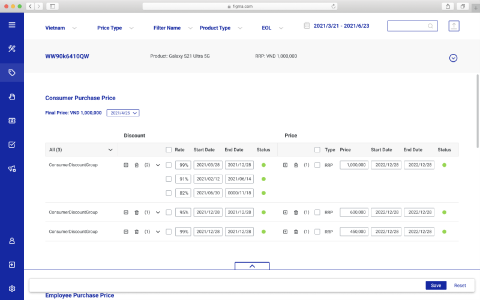
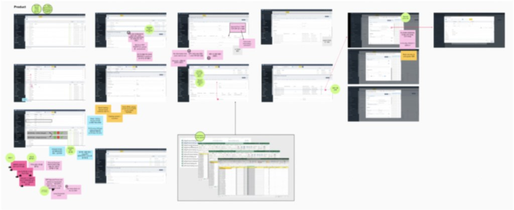
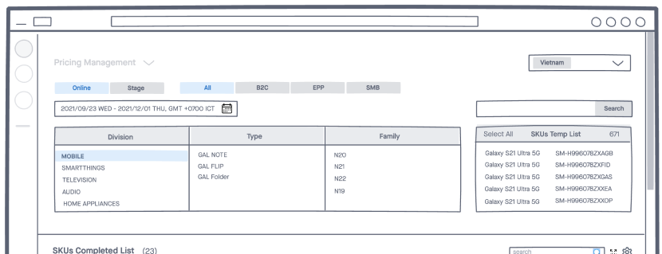
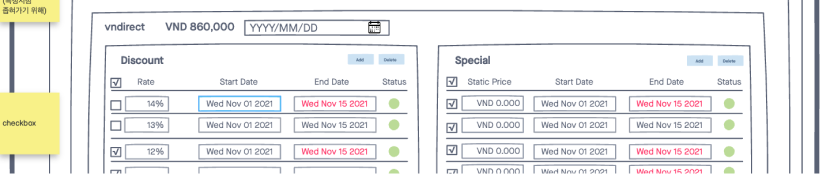
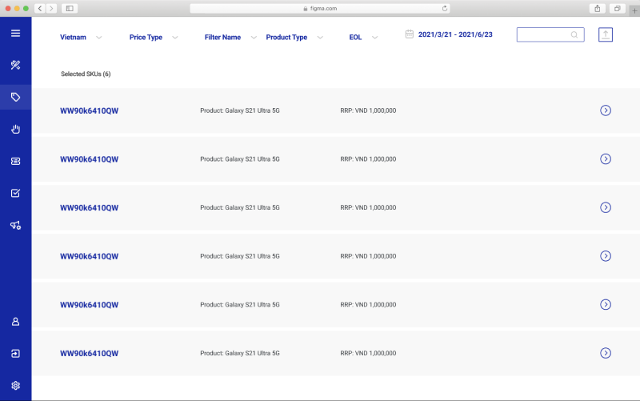

Managing product pricing in e-commerce is labor-intensive: huge data sets and variables like time periods, discount rates and customer segments. I led the redesign of the pricing back office, from user research to final design delivery.

Work processes had changed, and the system no longer met users' needs — tasks took far too long.
The previous system was packed with functions nobody used, and its interface was outdated.
Our team was new to e-commerce. Through in-depth interviews with a process advocate and an end-user representative, we mapped the back-office data management process, its main challenges and its opportunities.

Current workflow and pain points in the as-is system (blurred for confidentiality).
How might we streamline data management so it is both fast and accurate, without making users learn a new system? We went beyond screens and restructured how the systems integrate.
Users had stopped using the old filters and instead memorized item IDs. I redesigned the filters — exploring expanded and collapsed versions — so items could be found without endless scrolling.

Each product carries many special and discount prices by season and customer. After exploring prices as columns and as rows, we chose separate sections where users add, edit and delete within each price type.

With over a million products and hundreds of price types each, users needed to focus on the item at hand. Collapsing and expanding each product's long price list removes endless scrolling.

Online sales data is complex: tens of thousands to millions of products, each with dozens to hundreds of attributes that vary by location and timing.
The key lesson: for tools that manage product information, functionality comes first — the interface must locate the right products precisely and make editing many data points efficient.
Repetitive edits like price and discount updates made me think about AI: if sales and customer systems were connected, the system could propose edits and people would only review the results.